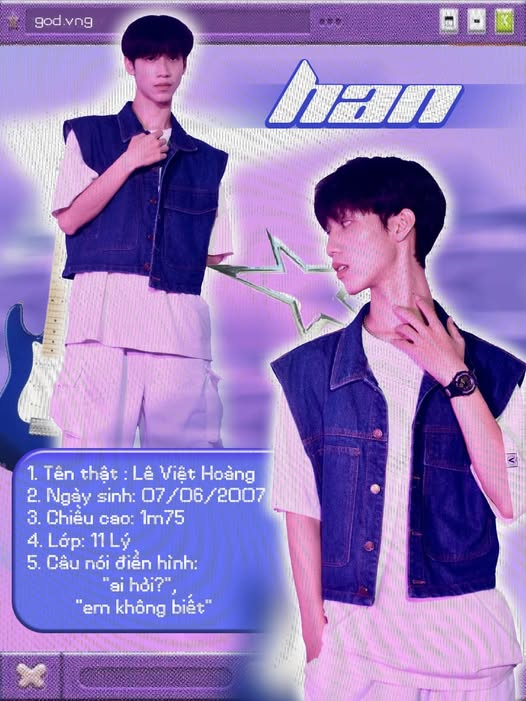

Câu lạc bộ nhảy GOD (God of Dance) trường THPT chuyên Võ Nguyên Giáp là một sân chơi năng động dành cho những học sinh yêu thích bộ môn nhảy hiện đại. Với sự đam mê và sáng tạo, các thành viên trong câu lạc bộ không chỉ rèn luyện kỹ năng vũ đạo mà còn tham gia vào các buổi biểu diễn, giao lưu văn hóa trong và ngoài trường. Câu lạc bộ nhảy GOD luôn tạo ra một môi trường thân thiện, khuyến khích sự phát triển tài năng, đồng thời xây dựng tinh thần đoàn kết và sáng tạo. Các hoạt động của câu lạc bộ không chỉ giúp học sinh giải tỏa căng thẳng mà còn là cơ hội để các bạn thể hiện cá tính và niềm đam mê nghệ thuật.
Tiếp nối series “ PROFILE GEN 6” năm nay, hãy để chúng mình bật mí một nhân tố vô cùng bí ẩn nhưng không kém phần thú vị, đó chính là HAN – chàng trai chuyên Lý đầu tiên của GOD với nụ cười toả nắng 🥵. 👑 THÔNG TIN CÁ NHÂN - Nghệ danh: Han - Tên thật: Lê Việt Hoàng - Ngày sinh: 07/06/2007 - Chiều cao: 1m75 - Lớp: Chuyên Lý (22 -25) - Câu nói điển hình: “Ai hỏi” / “Em không biết” 👑 MỘT SỐ THÔNG TIN KHÁC - Sở thích: Đu kpop, so chiều cao với mem trong GOD - Thói quen: Nghe nhạc, ăn ngủ - Điểm mạnh: Hướng ngoại với người quen - Điểm yếu: Hướng nội với người lạ - Lịch sử đi diễn: Giao lưu tân học sinh 2023 (CTV), Khai giảng 2023-2024 ✨ Khiến mọi người phải âm thầm hú hét trong lòng vào giây phút đầu bước lên sàn Casting 🥴, chắc hẳn Han đã gây được ấn tượng cực kì mạnh mẽ với vẻ ngoài điển trai cùng với chiều cao thuộc hàng khủng. Dự đoán đây là một đối thủ nặng kí có thể giành vị trí số 1 trong “Top những bản thiết kế vĩ đại, tinh hoa hội tụ, phụ nữ rất iu” của GOD đó nha 😳!!!! ✨ Thưa quý bạn và các vị, ngay từ những ngày đầu làm quen với các thành viên trong CLB, cứ tưởng Han hướng nội, boy lạnh lùng, ít nói nhưng sự thật thì lại hoàn toàn trái ngược, Han hướng nội thật nhưng mà là “Nội Bài” 😅. Nhìn vậy mà không phải vậy, cậu ấy còn khiến mọi người đi từ bất ngờ này sang đến bất ngờ khác khi công khai mình là một fan K-Pop chính hiệu với dàn “cạc bo góc” sang - xịn - mịn. Ở đâu đang bàn về giới showbiz Hàn thì ở đấy không thể thiếu Han được 🙅♂️!!!!. ✨ Tuy mới chỉ mới làm quen với bộ môn nhảy trong khoảng thời gian gần đây, nhưng với lối vũ đạo cuốn hút cùng khả năng ghi nhớ động tác khá nhanh của mình 🤩, Han đã thành công chiếm trọn spotlight mỗi lần bước lên sân khấu 🤭!!! ✨ Nếu muốn tìm hiểu thêm về Han, hãy follow bạn ấy qua instagram @le2_vh. Và đừng quên nhấn nút theo dõi GOD để cập nhật những thông tin mới từ chúng mình nhé!
